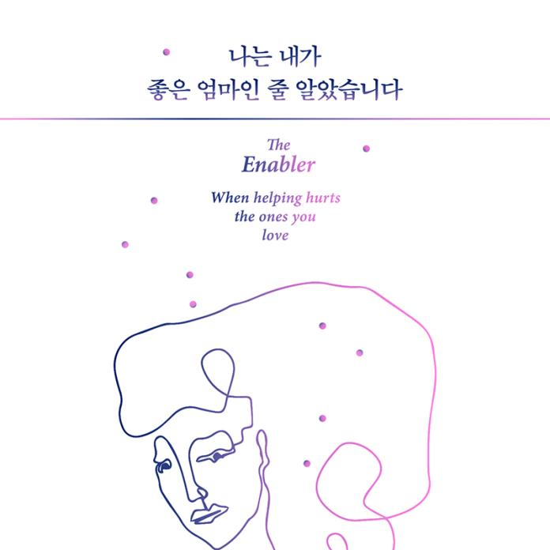

- 소리로 듣는 새로운 즐거움
- 국내 최고의 오디오북 서비스 오디언!
국내외 유명 도서를 눈으로 읽지 않고 귀로 듣다.
소설/인문/역사/강연/어학/어린이/자기계발/건강 등
다양한 장르를 구비한 오디오북 서비스입니다.
- 오디오북의 장점
- 우리는 왜 오디오북을 들어야할까요?
- 언제 어디서든
- 스마트폰에서도, PC에서도
언제 어디서든 이용이 가능합니다.
- 피로도 감소
- 소리로 듣는 오디오북으로,
눈이 피로해지지 않습니다.
- 멀티태스킹
- 출퇴근시 또는 운동, 요리, 가사 등
여러 생활도중에 들을 수 있습니다.
- 오디언 플레이어
- 오디언 플레이어의 간편한 기능을 소개합니다.
-
이어듣기 기능으로
중단된 시점부터 바로 재생
-
오디언 플레이어의
빠르고 편리한 재생 기능
-
작품을 한눈에
목차보기
-
잠들기전,
취침예약 설정
- 이어듣기 기능
- 작품을 듣다가 중지하고, 약간의 시간이 흐르면 어디서 중단 했는지
기억나지 않으시죠?
모든기억을 오디언이 대신 해 드리겠습니다.
오디언이 재생 중단 된 시점을 귀신같이 기억하고,
고객님은 언제든 중단된 시점부터 바로 재생 하시면 됩니다.
- 배속재생
- 작품을 빠르게 듣는 기능으로,
기본 1 배속에서 2 배속 까지
지원합니다. 속독시에유용합니다.
- 이전/다음 seeking
- 10초 단위로 빠르게 점프하는 기능
으로, 해당 작품 내부를 빠르게
탐색할 수 있습니다.
- 책갈피
- 작품 내 특정 위치를 북마크하여,
좋아하는 글귀나 문장을 빠르고
쉽게 찾아 들을 수 있습니다.
- 목차보기
- 해당 작품(도서)의 목차나 회차를
한눈에 볼수 있는 기능입니다.
- 최근 재생 목록
- 가장 최근에 들었던 작품들의
목록을 원터치로 확인할 수 있습니다.
- 취침예약 설정
- 잠들기전에 취침예약 설정을 하여
설정한 시간이 지나면 재생이
자동 중지 됩니다.
잠들기전, 오디언으로 독서를하면
잔잔한 ASMR기능을 느낄수 있어
불면증에 도움이됩니다.
- 무제한 서비스
- 월 8,900원으로 오디언의 모든 컨텐츠를 즐겨보세요.
- 당신의 취향저격
- 뭘 들을까? 항상 고민이 많으시죠?
사용자의 취향을 자동 분석하여 지금 당장 필요한 작품들을 추천해드립니다.
인문



- 오디언 요금안내
- 오디언의 모든 오디오북을 무제한으로!
부담없는 가격으로 제공해드립니다.
추천
정기결제 이용권- web(듣기),
mobile(듣기+다운로드)
무제한 이용
8,900원
- 1개월 이용권
- web(듣기),
mobile(듣기+다운로드)
무제한 이용
8,900원
- 6개월 이용권
- web(듣기),
mobile(듣기+다운로드)
무제한 이용
50,000원
- 12개월 이용권
- web(듣기),
mobile(듣기+다운로드)
무제한 이용
96,000원